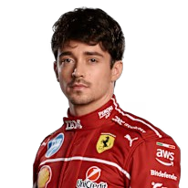
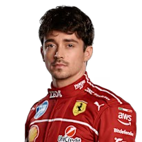

Scuderia Ferrari
La Scuderia Ferrari es, sin duda, el equipo más icónico y legendario en la historia de la Fórmula 1. Fundada por Enzo Ferrari en 1929, originalmente como la sección de carreras de Alfa Romeo, comenzó a construir sus propios coches de competición después de la Segunda Guerra Mundial. Su primera participación en un Gran Premio de Fórmula 1 fue en 1950, en el Gran Premio de Mónaco, el año inaugural del campeonato mundial.
Desde entonces, Ferrari ha sido sinónimo de pasión, velocidad e innovación en el automovilismo. Su color rojo distintivo, el "Rosso Corsa", se ha convertido en un símbolo global. La escudería ha participado en todas las temporadas del Campeonato Mundial de Fórmula 1, siendo el equipo más antiguo y el que tiene más victorias y campeonatos en su haber.
Éxitos y Dominio:
Ferrari ostenta los récords de la Fórmula 1 en cuanto a:
Campeonatos Mundiales de Constructores: 16 títulos, el más reciente en 2008.
Campeonatos Mundiales de Pilotos: 15 títulos, el más reciente en 2007.
Victorias en Grandes Premios: Más de 240 victorias.
Años Dorados y Pilotos Legendarios:
La historia de Ferrari está marcada por periodos de dominio y la presencia de pilotos que se han convertido en leyendas:
Años 50 y 60: Ferrari consolidó su estatus como potencia, con pilotos como Alberto Ascari (primer campeón de Ferrari en 1952 y 1953), Juan Manuel Fangio (campeón en 1956), Mike Hawthorn (1958), Phil Hill (1961) y John Surtees (1964). Estos años sentaron las bases de la mística de Ferrari.
Años 70: La era de Niki Lauda revitalizó a Ferrari, logrando campeonatos en 1975 y 1977, en medio de una intensa rivalidad con James Hunt. Jody Scheckter también ganó un título en 1979.
La era Schumacher (finales de los 90 y principios de los 2000): Este fue el periodo de mayor éxito en la historia de Ferrari. Con Michael Schumacher al volante y la dirección de Jean Todt y Ross Brawn, el equipo logró una hegemonía sin precedentes. Schumacher ganó cinco campeonatos de pilotos consecutivos (2000-2004), y Ferrari se alzó con seis campeonatos de constructores seguidos (1999-2004), estableciendo récords que aún perduran. Otros pilotos destacados de esta era incluyen a Rubens Barrichello.
Después de Schumacher: Ferrari logró un campeonato más de pilotos con Kimi Räikkönen en 2007, y el de constructores en 2007 y 2008. Posteriormente, pilotos como Fernando Alonso y Sebastian Vettel lucharon por el campeonato, pero no lograron llevarse el título de pilotos.
- País: Italia
- Base: Maranello, Modena, Italia
- Debut: 1929
 
